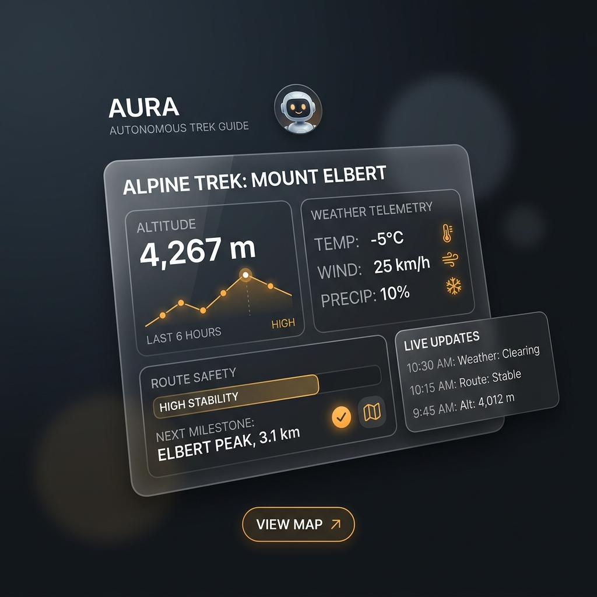

Autonomous Trail Synthesis
Trailo analyzes multi-layer elevation models and hyper-local meteorological forecasts to generate itineraries that adapt dynamically to changing weather and climber endurance.
Trailo replaces endless planning chaos with autonomous terrain routing. We unify live weather telemetry, certified guide matchmaking, and dynamic emergency protocols into a frictionless operating layer.
Select an adventure target to see Trailo autonomously compute route feasibility and verified supply:
Traditional travel agencies guess. Trailo computes real-time environmental science with verified operational rigor.
Trailo analyzes multi-layer elevation models and hyper-local meteorological forecasts to generate itineraries that adapt dynamically to changing weather and climber endurance.
No unvetted operators. Every guide, homestay, 4x4 convoy, and camping outfit is strictly verified under Girivah's Master Trust operating system with safety scores.
From permits and oxygen reserves to dietary profiling and emergency SOS tracking, Trailo handles 100% of background logistics instantly without manual paperwork.
Trailo operates as your silent, vigilant mountain guardian. Whether you are navigating blind curves in Ladakh or ascending altitude in Uttarakhand, our agent provides real-time situational awareness.

Join the upcoming cohort of explorers utilizing India's first autonomous trip, trial, and trek routing system.